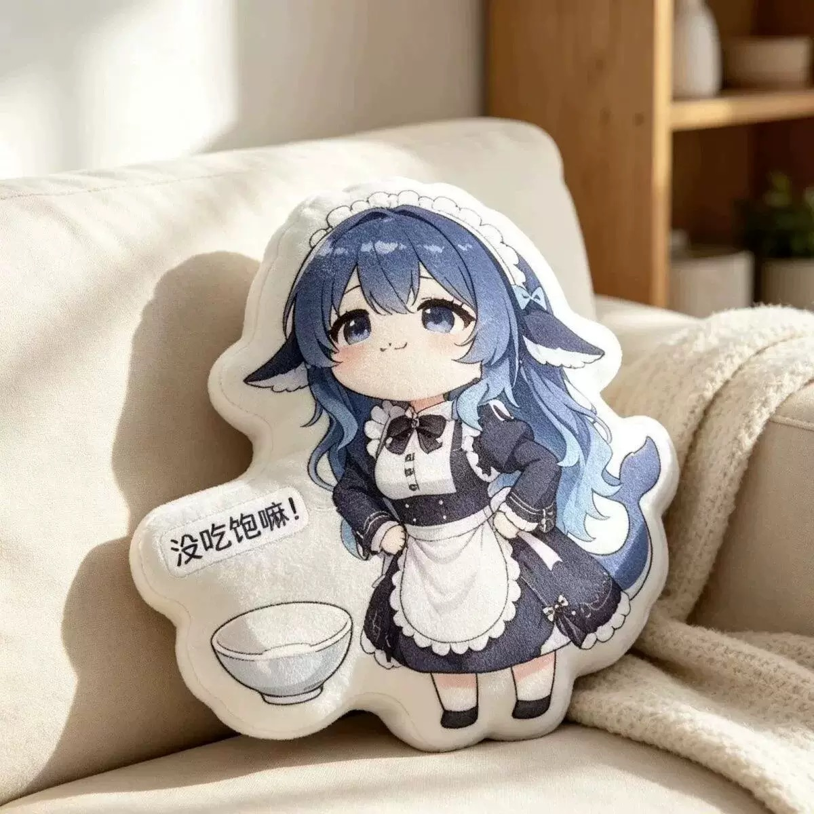

All designs / Design 04
Hungry Rice Bowl Edition
Hands on hips, empty bowl, printed speech bubble — the hungry version. The bowl is part of the die-cut shape, so the pillow has two padded lobes: the character and the prop. Printed text is baked into the fabric, not embroidered.
- Design04 of 14
- ShapeSquare character die-cut (~1200 px footprint)
- ColoursNavy, cream white, glacier-blue gradient hair
- FinishDye-sublimation printed plush face, soft short-pile fabric
- Photo1200 × 1200 JPEG, indoor daylight, neutral sofa / bedroom setting
- OrderingQuote on request — Telegram @DK88878
Want this design? Send the design number (04) plus your country to @DK88878 on Telegram and you'll get size options, fabric choices and a quote.
Message @DK88878 on Telegram